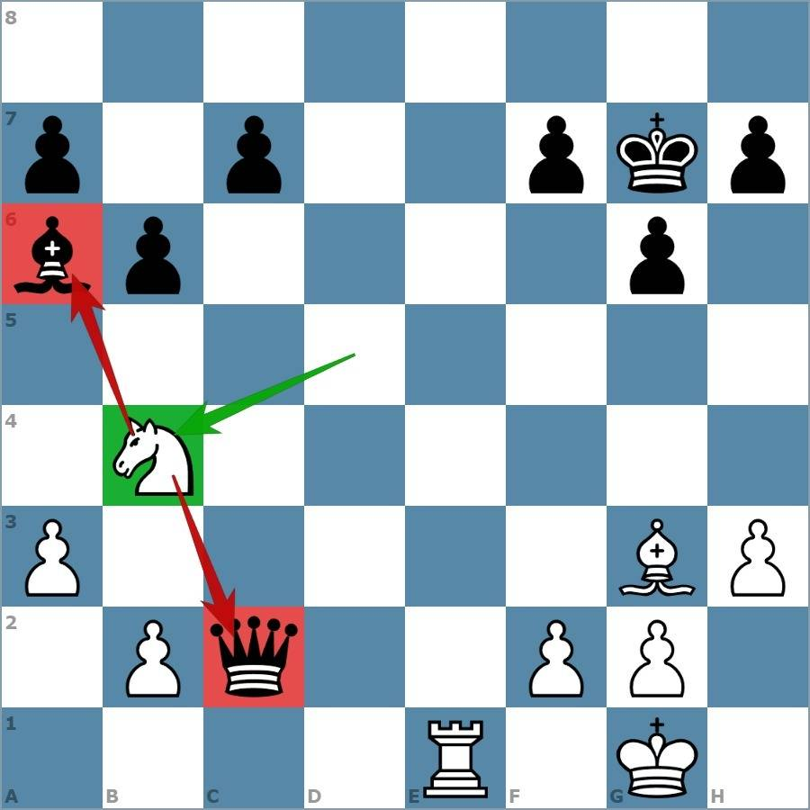
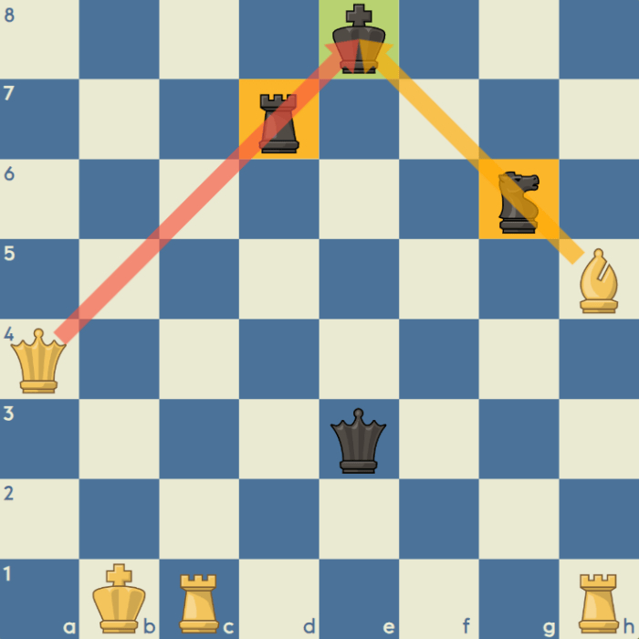

Les échecs se gagnent grâce à la combinaison de stratégie, de tactique et de technique. certains coups decisifs permettent de prendre l'avantage sur l'adversaire et parfois meme de s'assurer la victoire
La stratégie aux échecs consiste à planifier sur le long terme. Elle inclut le contrôle du centre, l’activité des pièces, la structure des pions et la sécurité du roi. Apprendre ces principes permet d’améliorer son jeu et de prendre de meilleures décisions pendant une partie.
Une partie d’échecs comporte plusieurs phases : l’ouverture, le milieu de jeu et la finale. Chaque phase demande des compétences différentes. Les débutants doivent apprendre à développer leurs pièces rapidement, tandis que les joueurs avancés travaillent sur les plans stratégiques et les finales techniques.
Les tactiques, comme les fourchettes, clouages et attaques doubles, sont souvent le moyen concret de transformer un avantage stratégique en victoire.


• Contrôler le centre de l’échiquier
• Développer les pièces avant d’attaquer
• Protéger son roi avec le roque
• Étudier les finales
• Résoudre des puzzles tactiques régulièrement
L’étude des parties de grands maîtres aide aussi à comprendre comment construire un plan. Possible sur Chess.com Beaucoup de ressources gratuites existent en ligne pour apprendre et s’entraîner.
Textes inspirés de sites éducatifs d’échecs et de livres classiques sur la stratégie qui expliquent les concepts fondamentaux comme la valeur des pièces, les phases du jeu et les principes stratégiques.
Images : Europe echecs, ChessKid Sites : Chess.com, Lichess, ChessTactics.org, Chaînes : GothamChess, Chess.com YouTube